500 N 21st St, Las Vegas NV 89101
Why this matters for the deal: the house is a clean renovation, but the exterior is a bare concrete pad behind chain-link with zero greenery. For a by-the-room rental, curb appeal and a sense of security/privacy fill rooms faster and support higher rent — so landscaping is one of the highest-ROI, lowest-cost improvements here. Every option below keeps the RV / off-street parking on the slab. All images are AI concept composites edited onto the real listing photos — illustrative of layout, plant palette, and materials; not construction drawings and not real photos.
1. Before & After — every exterior view
Front (from the street) recommended xeriscape


Front aerial
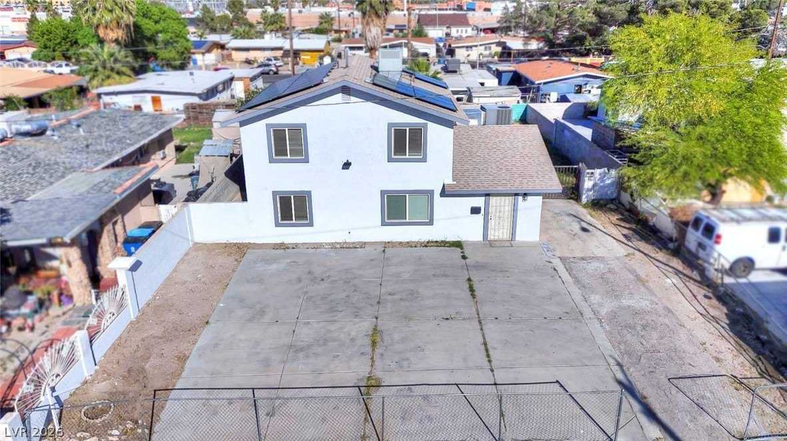
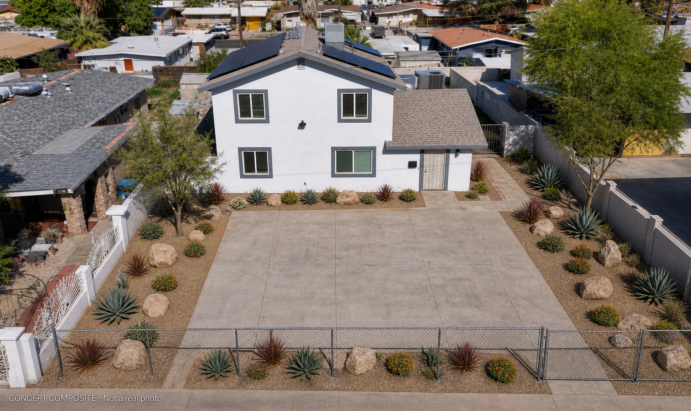
Backyard / casita


Side yard
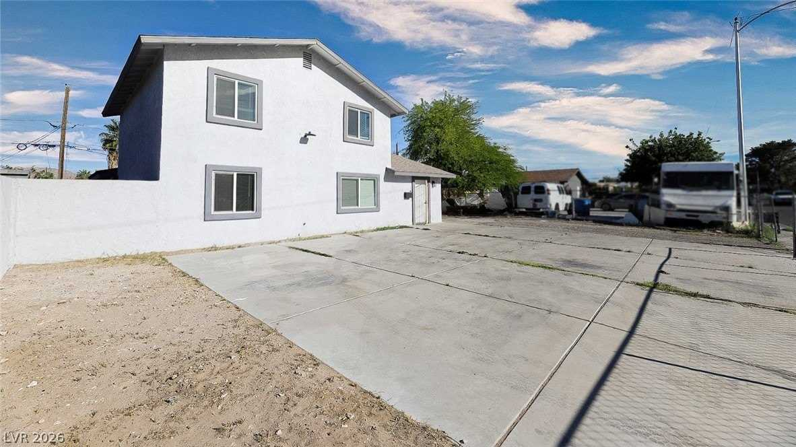
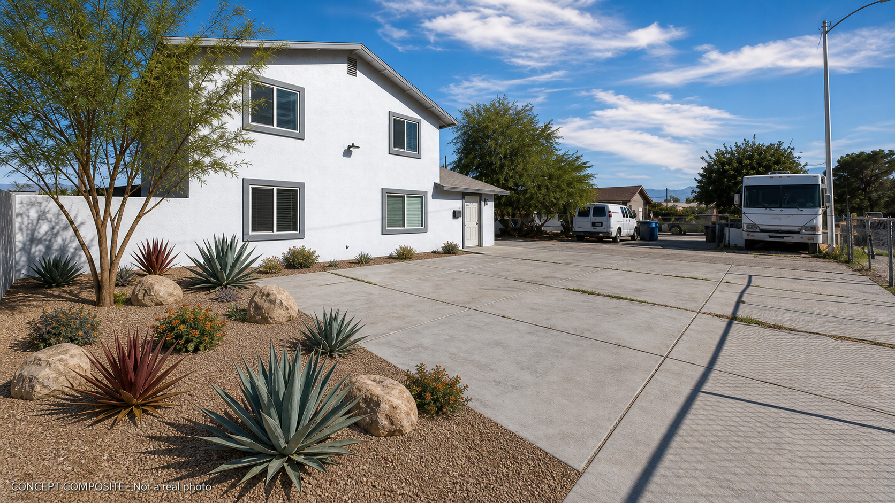
2. The block-wall proposal (front privacy) most impact
Replacing the chain-link front fence with a low (4–5 ft) stucco-finished block wall — color-matched to the house, with pilaster accents and a metal entry/RV gate — is the single biggest change to curb appeal, privacy, and security. For a by-room house it also makes tenants (and you, in the casita) feel the property is defined and safe.
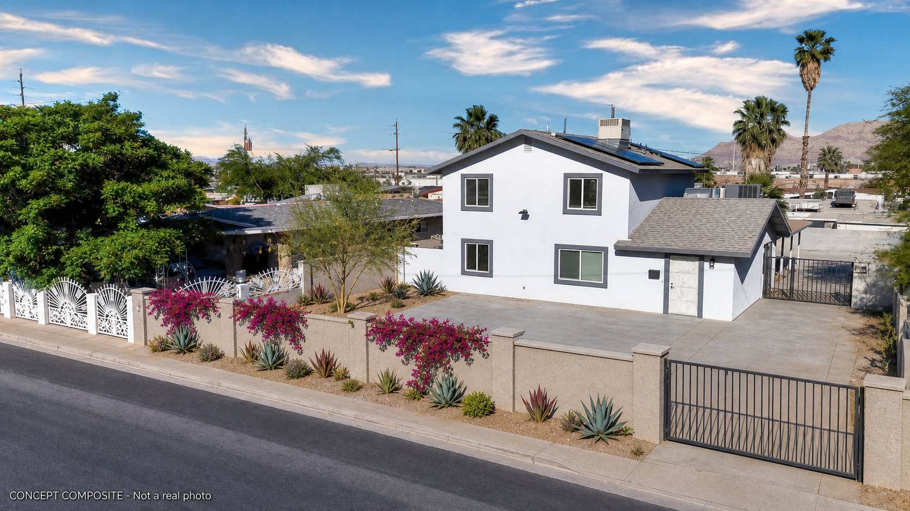
3. Design options & budget
Ranges reflect Las Vegas market pricing, 2026. Low end = DIY / owner-managed labor; high end = licensed landscape contractor. Front-yard-focused; whole-property figures noted where relevant. Assumes ~1,200–1,800 sf of landscapable area around the slab.
Option 1 — Budget Refresh (mostly DIY)
Keep the chain-link. Just make the dirt read as intentional desert: decomposed granite over the bare ground, a handful of boulders, a few clusters of agave / red yucca / lantana, and one small desert tree on a basic drip line. Fastest, cheapest curb-appeal lift.| Item | Qty / size | Cost |
|---|---|---|
| Decomposed granite + weed barrier | ~1,200 sf @ $1.50–2.50 | $1,800–3,000 |
| Boulders (placed) | 4–5 @ $150–300 | $750–1,500 |
| Drought shrubs / accents | ~15 @ $25–50 | $375–750 |
| Desert tree (15-gal) | 1 | $150–300 |
| Basic drip irrigation (DIY kit) | — | $300–600 |
Option 2 — Recommended Xeriscape best value
The full front + side desert design in the "after" renders: layered plantings, boulders, two shade trees, bougainvillea on the wall, a paver walkway to the door, and a proper zoned drip system. Keeps the chain-link (or clad it cheaply). This is the sweet spot of look vs. spend.| Item | Qty / size | Cost |
|---|---|---|
| DG + weed barrier | ~1,800 sf | $3,000–4,500 |
| Boulders (placed) | 8–10 | $1,500–2,500 |
| Layered plantings (agave, golden barrel, red yucca, Texas ranger, lantana) | 35–45 | $1,500–2,800 |
| Desert trees (24" box, desert willow + palo verde) | 2 | $800–1,600 |
| Bougainvillea + trellis | 3–4 | $300–600 |
| Paver walkway to front door | ~120 sf @ $15–22 | $1,800–2,640 |
| Zoned drip irrigation (contracted) | — | $1,500–3,000 |
Option 3 — Add the Block Wall (add-on to Option 2 → ~$15K–26K all-in)
Swap the chain-link for a 4–5 ft stucco/CMU privacy wall with a metal entry + RV gate. Biggest jump in curb appeal, privacy, and security — and the best tenant-appeal upgrade for a by-room house.| Item | Qty / size | Cost |
|---|---|---|
| CMU block wall + stucco finish (4–5 ft) | ~55–65 lf @ $60–110 | $3,300–7,150 |
| Metal entry + RV gate | 1 set | $1,200–2,500 |
| (+ Option 2 landscaping behind the wall) |
Option 4 — Premium Resort-Desert
Everything in Option 3, plus expanded paver/stamped-concrete entry, an artificial-turf accent panel, larger specimen trees, landscape uplighting, and a finished casita courtyard (shade ramada + patio) so your own space feels like a retreat.| Item | Qty / size | Cost |
|---|---|---|
| Everything in Option 3 (wall + xeriscape) | — | $15,000–26,000 |
| Expanded pavers / stamped concrete | ~400 sf @ $18–28 | $7,200–11,200 |
| Artificial-turf accent panel | ~300 sf @ $10–15 | $3,000–4,500 |
| Larger specimen trees | 2–3 @ 24–36" box | $1,500–3,000 |
| Landscape lighting (up + path) | — | $2,000–4,000 |
| Casita courtyard (ramada + patio + plantings) | — | $6,000–12,000 |
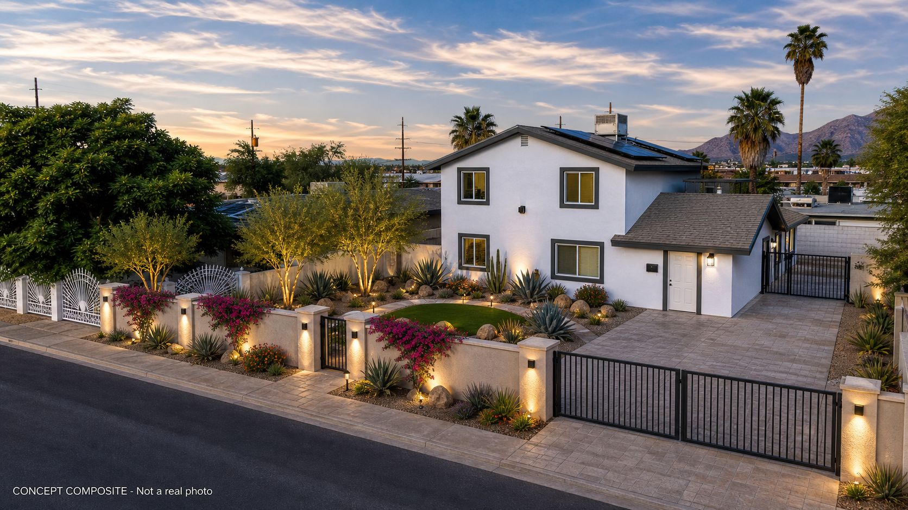
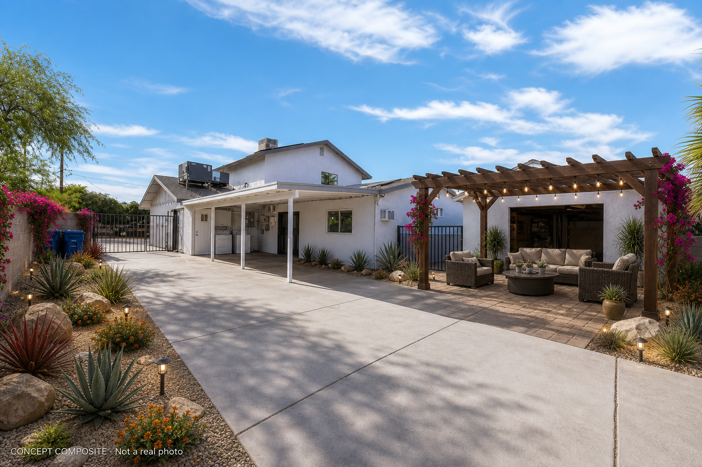
Also shown: Budget tier (front)
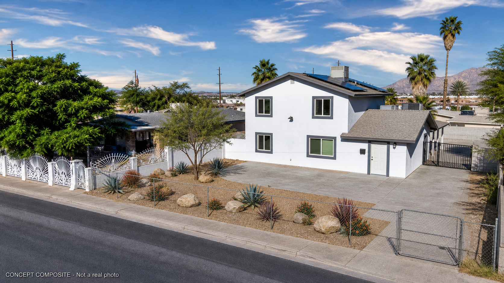
3b. Style directions — same house, different looks
Beyond the desert xeriscape, here are four other aesthetic directions for the front. Pick the feel you like — any budget tier above can be built in any of these styles.
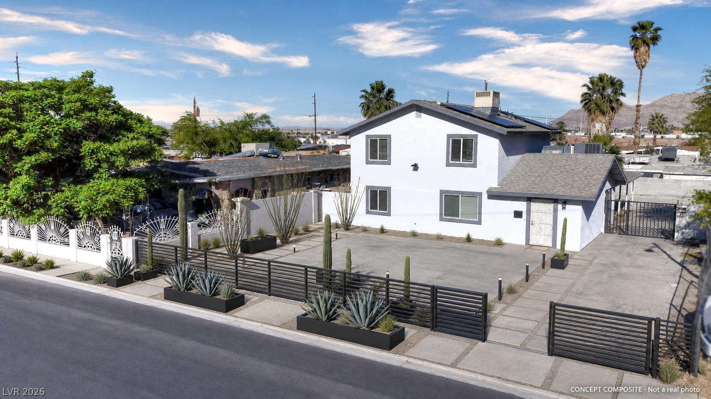
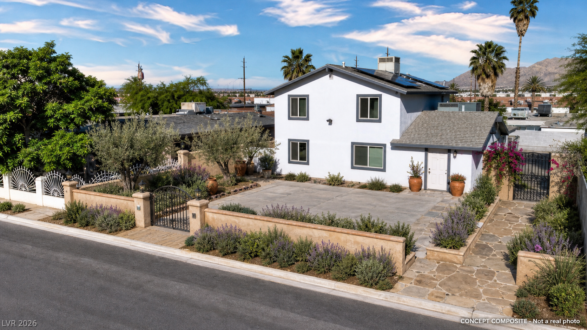
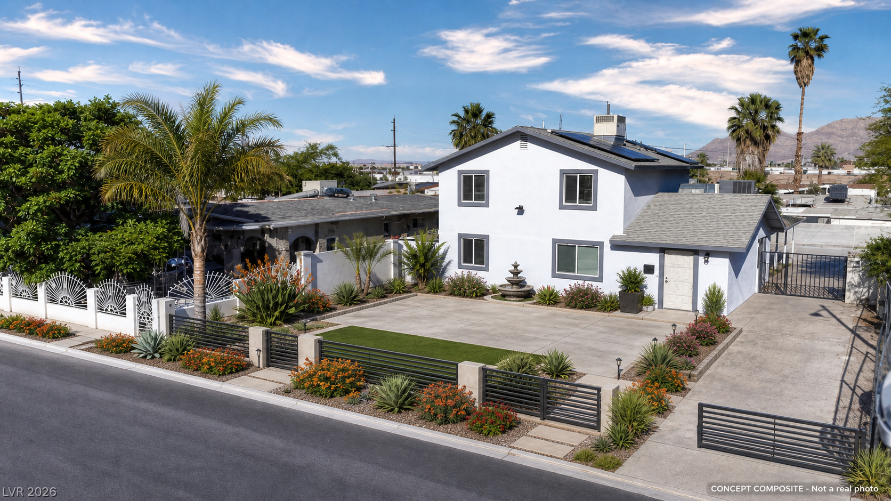
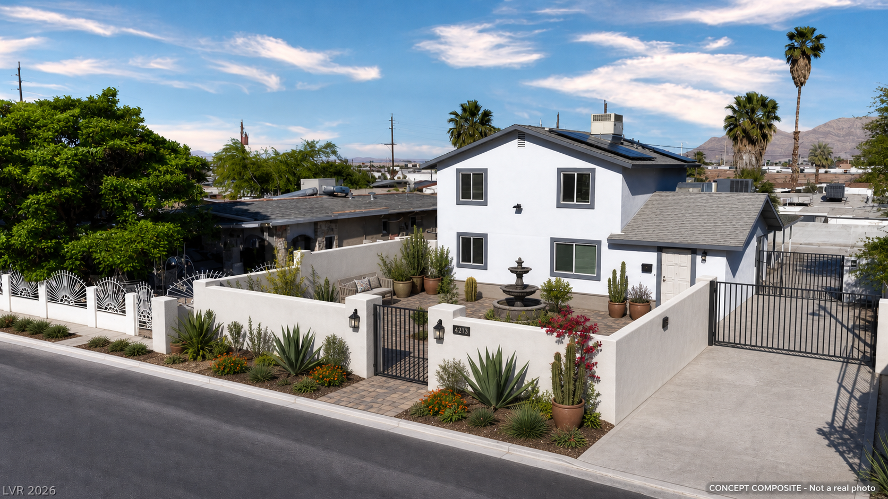
4. Recommendation
5. Reference site plans (top-down)


Concept only — hand these to a licensed Las Vegas landscaper for a firm bid. Plant list: desert willow, palo verde, agave, golden barrel cactus, red yucca, Texas ranger (purple sage), lantana, bougainvillea; decomposed granite, desert boulders, concrete pavers, drip irrigation. Prepared for Zion Property Acquisitions.